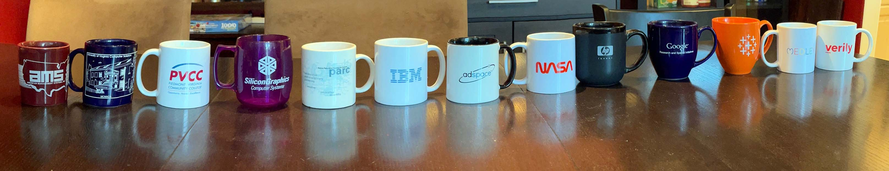

Rich Gossweiler
Experiences are more valuable than things almost every time.
current work
I am currently creating new models and systems for
interacting with information, especially in the real
world. These systems augment existing tools and physical
affordances. They also introduce new software and hardware
(such as wearables and robotics). The general models
leverage context and deal with the complexities of AI,
trust, privacy, and security.
skills
I am an experienced computer research scientist with a
background in visual perception and human-computer
interaction. I have also been an engineer, systems
architect, tech lead, project lead, and managed multiple
labs. I am an early Googler (10+ yrs), NASA Ames
principal scientist (Mars mission), and worked at a
start-up. I enjoy tackling grand scale challenges,
researching, designing, and rapid prototyping as part of
the discovery process.
domains
I have designed, led, and implemented several research
efforts and products across a broad range of areas
including interactive 3D graphics (VR, AR), information
visualization, mobile, television, travel, retail, health,
game design, and collaborative public displays. In
addition to research and product, I
hold around 100 patents.
trivia
I went to W&M at the same time as Jon Stewart. I
installed UVa's first web browser and wrote its first VR
system. I was Randy Pausch's first Ph.D. student. I was a
pole vaulter, surfer, and president of the chess
club. Just not at the same time.
wikipedia
feel free to contact me
Education
Ph.D. Computer Science - University of Virginia
Perception-Based Time Critical Rendering- improved rendering rates in virtual environments using app-independent, visual perception techniques
- developed DIVER (distributed VR platform), a basis for Alice
- developed a virtual reality lab for UVa
- conducted and published psychology perception experiments using virtual environments
- Randy Pausch's first Ph.D. student
- (DIVER) designed, developed, deployed the first network-accessible VR platform at UVa, connecting SGIs, hardware trackers, and a VPL headset. The network ran across multiple workstations running async, interactive python scripts. This architecture and API abstracted development and handled time critical, real time rendering.
- defined and implemented a specialized socket library and a high level object and event API for the VR platform. External python scripts manipulated the virtual environments through provided higher level object and event abstractions transparently over the network.
- leveraged DIVER to create a VR perception lab and run perceptual pyschology studies
- DIVER was the rendering engine and underlying API for the Alice platform
- the UVa Robotics Group also used the platform to create simulations and train robots
Master of Computer Science, minor mathematics - University of Virginia
Application Independent Object Selection from Multimodal Input- akin to "Put That There", combined multi-modal, probabilistic, ambiguous input from voice and gesture to recommend selection results
Bachelor of Science, Computer Science, minor mathematics -
College of William and Mary
- two honor fraternities
- strong physics background -- built sidereal clock for astronomy department
- wrote experiment software for psychology department
Work History

my career as a series of mugs
Stealth, Medley Research, Consulting (2020 - present)
- Stealth work
- R&D for information gathering, presentation, and sharing in a new browser form
- R&D for information gathering, presentation, and sharing in the real world
- collaborating on with institutes on AI, robotics, next generation user experiences
Verily (2019-2020) staff research scientist
- Reported to founder, ran lab, worked on special projects and external relations
- Jessica Frank (intern) led ML+JS heart anomaly project
- HealthMesh - initial API and platform integrating personal, community, and global health data
- Volatile Organic Compound (VOC) multidimensional data visualization
- moonshot project concepts: medicine in/for space
- research for L’Oréal visit on skincare and healthcare
Google Health (2017-2019) senior research scientist, managed multiple labs
- co-ran early internal Google Health conference bringing together separate teams to coordinate on healthcare and google
- ran multiple labs facilitating cross-team coordination for health studies; lab also used to present health work; lab also used to explore concepts in bringing clinics into the home
- worked with google architects on clinics of the future
- LabelTool -- tool to adjudicate multiple human labelers deciding what terms to label and how
- Data Authentication Tool -- tool to visualize and alert health managers about health worker survey and experiments data
- scribe tool -- rapid prototype (hardware and software) to act as a portable scribe tool for a medical practitioner.
- tools and methodologies for reducing skin tone bias in medical practice
- doc-in-a-box: rapid prototypes on creating spaces for doctors and AI to work with patients (communities, home)
- FHIR data ETL and visualization tools
- Malory: a simple client-server-JSON architecture making it easy to rapidly prototype medical audio and language research.
- rapid prototypes exploring new ways to gather, analyze, view personal medical heath over time
Tableau (2015 - 2017): senior research scientist
- Davi: mobile and desktop, statistics-based data visualization platform. Developed with VP Leland Wilkinson
- ran small ad hoc research team (cartographer, game engineer, myself)
- Eviza: NLP for Visual Analysis (this was 99% the other team members but I helped a little)
- web-based component architecture for data cleaning, analytics, and data visualization
- interactive, modular, extensible tool for binning and visualizing data
- holodeck interactive large display with support for gestures, voice,
- multi-person, very-large display interaction web-based, GPU animation platform
- Innovating and implementing desktop, browser, and mobile data visualization systems.
Google Research, Google News, Google X (2005 - 2014): mad scientist, tech lead, front end eng
- newsBoard a large, multi-person, public, interactive
information display
- led the design, research development, and engineering deployment
of a large, depth-sensing, interactive, multi-person display
system
- designed and prototyped in research, presented at a Google research consortium
- joined knowledge team, migrated and engineered to interact with real time news
- implemented and deployed in-house, 24/7
- presented to all of Google at a company-wide engineering all-hands
- quickSuggest -- innovative UX and recommendation
system for YouTube television (launched)
co-developed, published, and helped deploy listings recommendation system and remote control interaction experience. Significant improvment in speed and experience when entering searches from a remote control. - argos - built
a new platform and model for rapid application
development on Android devices
- led a small team of researchers
- developed platform, applications and API
- integrated 2D (web), 3D (openGL) and realtime (camera) information into single model
- supported external sensor extensions
- published in IEEE Pervasive Computing
- presented at Google research consortium
- presented to Android CEO and senior staff
- gulliver - (launched) co-developed collaborative, mobile travel application. developed and tested in research, deployed with engineering team. Worked with Lonely Planet partnership for content.
- Google I/O 2011 - worked with vision researchers and Android team on developing face-tracking applications for mobile devices (using the GPU). Team presented platform to Larry, Sergey, Andy, senior staff to be integrated into Android core. Applications were presented at Google I/O Android keynote.
- world-wide tv listings - Co-tech lead, lead on interaction and design of a world-scale television guide. Allowed millions of viewers all over the planet to explore and interact with listings and related information.
- Smaller initiatives:
- watch interfaces with Android
- security: a novel CAPTCHA system (published)
- sketch-up team on a 3D warehouse interactive model catalog
- Google production code reviewer for JavaScript
- GoogleCard and GoogleCheckout: prototypes for shopping experiences
- sketchup, Android 3D, Google Games
- Browser-centric AR experiments and prototypes
HP Labs (2003 - 2005): research scientist
- Penguin - worked with Bernardo Huberman on an economics model for managing polgyon count LOD when rendering realtime 3D scenes.
-
CustomTV
- part of a team that designed and
developed a way to create personal television channels.
A channel was a streaming search result (e.g. "news",
"wearables", "my vacation"), browsed with a remote control.
- worked with USC school of film and television
- implemented the design
- presented at CES HP keynote
- Plog- a mobile phone image sharing and storytelling platform developed when cameras were first integrated with cell phones. Images were clustered on the server into stories and were shared to desktops, tvs, and printers as postcard collage.
- Plog News - an automatic newspaper generated based on determinining news-worthiness from plog pictures clustered in time and location.
- Media2Go - mobile interaction with public displays via bluetooth. People could walk up to digital posters and get information, coupons, and video trailers beamed to their phones.
- Principal Investigator - University of California, Berkeley Industry Collaboration - worked with HP and Berkeley on funding and sharing innovations.
NASA Ames (2002 - 2003): principal research scientist
- MERBoard - a collaborative system of large touchscreen displays designed, developed and deployed for the Mars Exploration Rover (MER) mission. Multiple publications.
AdSpace Networks (acquired start-up) (2001 - 2002): senior software engineer
- CoolSign Network - complex software system that
delivers and manages digital assets to large digital signs.
- ad selling modeled after television auctions
- network included theatre chains, shopping malls, Las Vegas signs
- mixed real time information, entertainment, advertising
IBM Almaden Research (2000 - 2001): research scientist and systems developer
- BlueBoard - co-designed and developed a web-based, in situ, easy-to-use collaboration system. Allowed people to easily hold meetings, retain state, share to other boards and external devices.
- presented to the CEO of IBM
- deployed at various IBM locations for senior executives around the world
- basis for a system used by NASA
- multiple publications
- DSpace - project lead for a system supporting real-time, distributed user interfaces on the internet. The toolkit provided developers with an easy way to create distributed widgets that could react to digital and physical sensors. Based on a Gelernter tuple model.
Xerox PARC (1997 - 2000): research scientist
- Side Impact - a modified browser with a side tray that reacted to the pages you visited, could store gathered information, present enhanced interfaces for the page.
- ConeGraph - developed a 3D widget for simultaneously viewing hierarchy and linkage structures.
- Grid - developed a PC-based, interactive 3D graphics infrastructure and API used for information visualization.
- Bookplex I and II - developed an interactive 3D graphics application allowing users to read a scanned book plus all of its references online, perform queries and recommendations on the Bookplex.
- NavCards - developed a project integrating a digital 3D world with physical RF tags to navigate three-dimensional spaces.
Silicon Graphics Inc. (SGI) (1995 - 1997): 3D graphics engineer
- CosmoWorlds - part of a large engineering team. Helped produce an interactive 3D graphics modeling system used to create virtual worlds on the web.
- contributed to the VRML specification
Piedmont Virginia Community College instructor
- taught introduction to computers: DOS, DBase, Lotus 1-2-3
AMS - American Management Systems developer, consultant
- wrote JCL, COBOL on IBM360 machines, often on punch card machines
- installed Accounting System for the City of Los Angeles
- installed Accounting System for the County of Los Angeles
- installed Accounting System for the Arizona Department of Transportation
Publications and Talks
see also: google scholar: rich gossweilerPerceiving Geographical Slant in the Real World and in a Virtual World (↗ link)
D. Proffitt, M. Bhalla, R. Gossweiler, J. Midgett -
Psychonomic Bulletin & Review, 1995, pp. 409-428.
measured how people perceive hill slant both in
the real world and in a virtual one. This provided three
insights: (1) how people perceive hill slant (2) how
perception compares in virtual worlds and (3) the potential
to use virtual environments to advance perceptual studies
under conditions difficult to measure in the real world.
Alice: Rapid prototyping system for virtual reality (↗ link)
Randy Pausch, Tommy Burnette, A.C. Capeheart, Matthew Conway, Dennis
Cosgrove, Rob DeLine, Jim Durbin, Rich Gossweiler, Shuichi Koga, and
Jeff White,
IEEE Computer Graphics and Applications 15(3), 1995, pp. 8-11.
An Introductory Tutorial for Developing Multi-User Virtual Environments (↗ link)
Rich Gossweiler, Robert J. Laferriere, Michael L. Keller, and Randy
Pausch. "An introductory tutorial for developing multiuser virtual
environments." Presence 3, no. 4 (1994): 255-264.
On the design of personal and communal large information scale appliances (↗ link) (download pdf)
Daniel Russell, Rich Gossweiler, Ubicomp 2001: Ubiquitous Computing,
pp. 354-361, Springer Berlin Heidelberg, 2001.
Distributed and Disappearing User Interfaces in Ubiquitous Computing (↗ link)
Beverly Harrison, Rich Gossweiler, SIGCHI 2001 Workshop. 2001.
What's up CAPTCHA?: a CAPTCHA based on image orientation (↗ link)
Rich Gossweiler, Maryam Kamvar, Shumeet Baluja, proceedings of the 18th
international conference on World wide web, pp. 841-850, ACM, 2009.
Visual Perception for Data Visualization, SIGCHI 2000, panelist (↗ link)
Colin Ware, Ed Chi, Rich Gossweiler, Visual Perception for
Data Visualization, SIGCHI 2000.
Enhancing a digital book with a reading recommender (↗ link)
Allison Woodruff, Rich Gossweiler, James Pitkow, Ed H. Chi, and Stuart
K. Card, proceedings of the SIGCHI conference on Human factors
in computing systems, pp. 153-160, ACM, 2000.
Visualizing the evolution of web ecologies (↗ link)
Ed Chi, James Pitkow, Jock Mackinlay, Peter Pirolli, Rich Gossweiler,
and Stuart K. Card, Proceedings of the SIGCHI conference on Human
factors in computing systems, pp. 400-407. ACM Press/Addison-Wesley
Publishing Co., 1998.
Alice: A Rapid Prototyping System for Building Virtual Environments (↗ link)
Matthew Conway, Randy Pausch, Rich Gossweiler, Tommy Burnette,
Conference companion on Human factors in computing systems. pp 295-296,
ACM, 1994.
Alice: Lessons Learned from Building a 3D System for Novices (download pdf)
Matthew Conway, Steve Audia, Tommy Burnette, Dennis Cosgrove, and Kevin
Christiansen, Rob Deline, Jim Durbin, Rich Gossweiler, Shuichi Koga,
Chris Long, Beth Mallory, Steve Miale, Kristen Monkaitis, James Patten,
Jeff Pierce, Joe Shochet, David Staack, Brian Stearns, Richard
Stoakley, Chris Sturgill, John Viega, Jeff White, George Williams,
Proceedings of the SIGCHI conference on Human factors in computing
systems, pp. 486-493. ACM, 2000.
DIVER: a Distributed Virtual Environment Besearch Platform (↗ link) (↗ link)
Rich Gossweiler, Chris Long, Shuichi Koga, and Randy Pausch.
In Virtual Reality, 1993. Proceedings., IEEE 1993 Symposium on Research
Frontiers in Virtual Reality, pp. 10-15. IEEE, 1993.
NASA's MERBoard (↗ link)
Jay Trimble, Roxana Wales, Rich Gossweiler. In Public and Situated
Displays, pp. 18-44. Springer Netherlands, 2003.
IEEE Virtual Reality Annual International Symposium '95, Panelist (download pdf)
M. Zyda, R. Gossweiler, J. Morrison, S. Singhal, M. Macedonia
Networked Virtual Environments, IEEE VR, pg 230, 1995.
CSCW 2002 workshop on public, community and situated displays: NASA MERBoard (download pdf)
Jay Trimble, Roxana Wales, Rich Gossweiler,
2002 Conference on Computer Supported Cooperative Work, 2002.
ContentCascade incremental content exchange between public displays and personal devices (↗ link)
Himanshu Raj, Rich Gossweiler, and Dejan Milojicic, Mobile and
Ubiquitous Systems: Networking and Services, pp. 374-381, IEEE, 2004.
Content Exchange Appliances (↗ link)
Dejan Milojicic, John Ankcorn, Rich Gossweiler, Jim Rowson, Larry
Rudolph, Sonia Garg, Franklin Reynolds, Rajnish Kumar, and Himanshu
Raj, HPL-2003-139, 2003.
PLOG: Easily Create Digital Picture Stories Through Cell Phone Cameras. (download pdf)
R Gossweiler, J Tyler - IWUC, 2004 - hpl.hp.com
Digital Story Telling on the Go, TechCon, 2005 (↗ link)
Philippe Debaty, Rich Gossweiler, John O’Connel, Rajev Pandey,
Joshua Tyler, Steven Sorken, HP TechCon05, 2005.
PLOG: Cell Phone image-based StoryTelling (↗ link)
R Gossweiler, J Tyler, Mobile Phone CSummit for HP, Maui Hawaii, 2004.
SketchUp: An Easy-to-Use 3D Design Tool that Integrates with Google Earth (download pdf)
Rich Gossweiler, Mark Limber. In Adjunct Proceedings of the 19th annual
ACM Symposium on User Interface Software and Technology (UIST06),
19, p. 3, 2006.
Alice and Diver: A software architecture for building environments. (↗ link)
Randy Pausch, Matthew Conway, Robert DeLine, Rich Gossweiler, and Steve
Miale, INTERACT'93 and CHI'93 Conference Companion on Human
Factors in Computing Systems, pp. 13-14. ACM, 1993.
Argos: Building a Web-Centric Application Platform on Top of Android (↗ link)
Rich Gossweiler, Colin McDonough, James Lin, and Roy Want
A System for Application Independent Time Critical Rendering (↗ link)
Rich Gossweiler, ACM, 1994.
Amortizing 3D Graphics Optimization Across Multiple Frames (↗ link)
Jim Durbin, Rich Gossweiler, and Randy Pausch. "Amortizing 3D graphics
optimization across multiple frames." In Proceedings of the 8th annual
ACM symposium on User interface and software technology,
pp. 13-19. ACM, 1995.
Principles of Visual Perception and Its Applications in Computer Graphics (download pdf)
Victoria Interrante, Penny Rheingans, James Ferwerda, Rich Gossweiler,
and Toms Filsinger, SIGGRAPH 97 Course Notes 33.
UserVerse: Application-Independent Object Selection Using Inaccurate Multi-Modal Input (↗ link)
Randy Pausch, Rich Gossweiler, Multimedia interface design,
pp. 139-145, ACM, 1992.
also as a chapter in Multimedia interface design, Meera
Blattner, Roger Dannenberg, Addison-Wesley, April 1992.
PHIZ: Discovering TVs Long Tail through a Channel-Centric Model (download pdf)
James Rowson, Rich Gossweiler, Kurt MacDonald, 3rd European Conference
on Interactive Television, EuroITV 2005, Aalborg University, Denmark,
2005.
Google TV search: dual-wielding search and discovery in a large-scale product (↗ link)
Manish Patel, Rich Gossweiler, Mehran Sahami, John Blackburn,
David Brown, and Andrea Knight, proceedings of the 1st
international conference on Designing interactive user experiences for
TV and video, pp. 95-104. ACM, 2008.
Enabling informal communication of digital stories (↗ link)
Debaty, Philippe, Patrick Goddi, Rich Gossweiler, Rakhi Rajani, Alex
Vorbau, and Josh Tyler, HPL-2004-180, 2004.
2004 - hpl.hp.com
QuickSuggest: character prediction on web appliances (↗ link)
Ulas Gargi, Rich Gossweiler, proceedings of the 19th international
conference on World wide web, pp. 1249-1252. ACM, 2010.
Eviza: A Natural Language Interface for Visual Analysis (↗ link)
Vidya Setlur, Sarah Battersby, Melanie Tory, Rich Gossweiler,
Angel X. Chang, ACM User Interfaces and Software Technology (UIST) 2016
Stanford Talk on Argos Platform for Android (2/6/2013)
Rich Gossweiler, Stanford, February 6, 2013
USC Interactive Media and Games talk on (1/31/2007) (↗ link)
Rich Gossweiler, USC School of Film and Television, January 31, 2007.
USC Cinematic Arts talk on Collaborative Systems( 1/26/2011) (↗ link)
Rich Gossweiler, USC Cinematics Arts, January 26, 2011.
USC Design Intelligence Symposium (3/3/2011) - Intelligent Physical Architectures
Rich Gossweiler, USC School of Architecture, March 3, 2011.
Patents
www.richgossweiler.com